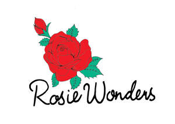

Trade Mark Journal No.2025/020 16 May 2025
UK00004196587 29 April 2025 (14,16,18,24,25,26)

- Class 14
- Lapel pins [jewellery]; Pins [jewellery]; Pins being jewellery; Lapel pins; Lapel pins of precious metals [jewellery]; Gold plated brooches [jewellery]; Decorative brooches [jewellery]; Enamelled jewellery; Costume jewellery; Jewellery brooches; Jewellery, including imitation jewellery and plastic jewellery; Necklaces [jewellery]; Fashion jewellery; Pendants [jewellery]; Items of jewellery; Gold jewellery; Rings being jewellery; Lockets [jewellery]; Keyrings; Necklaces; Silver-plated bracelets; Charms for jewellery; Jewellery charms; Jewellery chain of precious metal for bracelets; Gold-plated necklaces; Jewellery; Brooches [jewellery]; Bracelets made of embroidered textile [jewellery]; Jewellery items; Bracelets; Bead bracelets; Friendship bracelets; Bracelet charms; Gold plated bracelets; Bracelets of precious metal; Silver necklaces; Gold necklaces; Jewellery rope chain for necklaces; Earrings; Clasps for jewellery; Necklaces of precious metal; Jewelry chains; Chains [jewelry]; Silver-plated earrings; Ring bands [jewellery]; Silver earrings; Gold earrings; Key rings [trinkets or fobs]; Gold-plated earrings; Trinkets [jewellery]; Key charms [trinkets or fobs].
- Class 16
- Greeting cards; Greetings cards; Cards; Pop-up greetings cards; Invitation cards; Holiday cards; Birthday cards; Christmas cards; Printed cards; Note cards; Anniversary cards; Temporary tattoos; Temporary tattoo transfers; Printed stationery; Printed books; Printed booklets; Printed cardboard invitations; Adhesive printed labels; Stickers; Paper hangtags; Stickers [stationery]; Paper stationery; Paper badges; Printed paper invitations; Die-cut paper shapes; Adhesive stickers; Decals; Tapes (adhesive -) [stationery]; Wall decals; Cardboard hangtags; Labels of paper or cardboard; Adhesive pads [stationery]; Adhesive tape for stationery purposes; Notebooks; Spiral-bound notebooks; Pocket notebooks; Blank paper notebooks; Notepads; Jotters; Sketchbooks; Binders [stationery]; Paper folders [stationery]; Wirebound books; Pocket books [stationery]; Folders [stationery]; Stationery folders; Illustrated notepads; Pencil ornaments [stationery]; Pencil ornaments (stationery); Pen and pencil boxes; Boxes for pens; Adhesive notepads; Desk diaries; Folders for papers; Paper folders; Paper sheets [stationery]; Pens; Pencils; Scribbling pads; Envelopes [stationery]; Pencils with erasers; Writing stationery; Blank journals; Stationery; Pads [stationery]; Pen and pencil cases; Envelopes for stationery use; Writing paper pads; Scribble pads; Pencil erasers; Wrapping paper; Gift wrapping paper; Decorative wrapping paper; Paper for wrapping books; Metallic gift wrapping paper; Gift-wrapping paper; Sheets for wrapping made of paper; Gift wrap paper; Paper gift wrap; Tissue paper; Party ornaments of paper; Decorative paper garlands for parties; Paper party decorations; Paper gift tags; Paper gift boxes; Christmas gift wrap; Paper bunting; Paper cake toppers; Paper napkins; Paper banners; Decorations for pencils; Musical greeting cards; Blank cards; Picture cards; Post cards; Occasion cards; Flash cards; Place cards; Correspondence cards; Gift boxes made of cardboard; Paper gift bags; Glitter for stationery purposes; Glitter pens for stationery purposes; Paper boxes for storing greeting cards; Ink erasers; Colouring pencils; Attachments for pencils; Erasers; Pencil sets; Appliques in the form of decals.
- Class 18
- Tote bags; Bags; Crossbody bags; Toiletry bags; Cloth bags; Reusable shopping bags; Beach bags; Makeup bags; Knitted bags; Cosmetic bags; Book bags; Purses; Handbags, purses and wallets; Clutch purses [handbags]; Umbrellas and parasols.
- Class 24
- Fabric on the roll; Woven fabrics; Woven fabrics for cushions; Woven labels; Printed fabrics; Fabrics; Textile fabrics; Cotton fabrics; Woollen blankets; Cotton blankets; Quilted blankets [bedding]; Picnic blankets; Bed linen and blankets; Yoga blankets; Swaddling blankets; Bed blankets made of cotton; Cot blankets; Bed blankets; Bed clothes and blankets; Knitted fabric; Knitted fabrics of cotton yarn; Knitted fabrics; Printing blankets of textile material; Towels of textiles; Woollen fabrics; Children's blankets; Textiles made of linen; Textiles made of cotton; Fabric for use in the manufacture of bags; Cotton fabric; Badges made of fabric material; Fabrics being textile piece goods; Fabric for use in the manufacture of clothing; Silk fabrics; Yoga towels; Textile fabrics for making into clothing; Fabrics for shirts; Covers for pillows; Printed textile labels; Textile fabrics for use in manufacture; Pillow shams; Pennants [flags], other than of paper; Beach towels; Tea towels; Oilcloth for use as tablecloths.
- Class 25
- Printed t-shirts; Eye masks; Face mask [clothing] ; Sleep masks; Hats; Baseball caps and hats; Paper hats [clothing]; Beanies; Caps [headwear]; Sweatshirts; Hooded sweatshirts; T-shirts; Quilted jackets [clothing]; Dresses; Bandanas [neckerchiefs]; Scarves; Silk scarves; Shawls; Knitted clothing; Knitted gloves; Caftans.
- Class 26
- Embroidered patches; Ornamental cloth patches; Ornamental adhesive patches for jackets; Embroidered patches for clothing; Patches for clothing; Cloth patches for clothing; Heat adhesive patches; Claw clips [hair accessories]; Hair barrettes; Hair scrunchies; Brooches [clothing accessories]; Bows for the hair; Hair bows; Hair clips; Hairbands; Embroidered badges; Button badges; Novelty buttons [badges] for wear; Ribbons.
Rosie Wonders Ltd